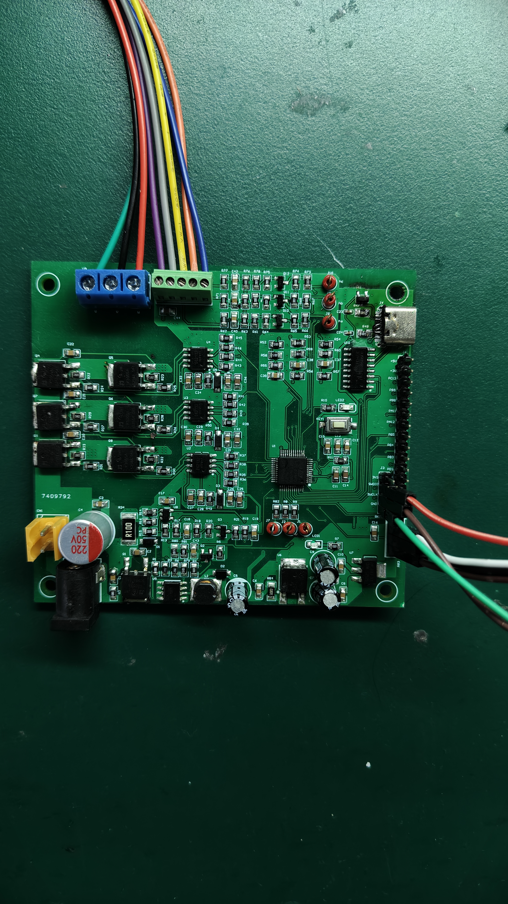
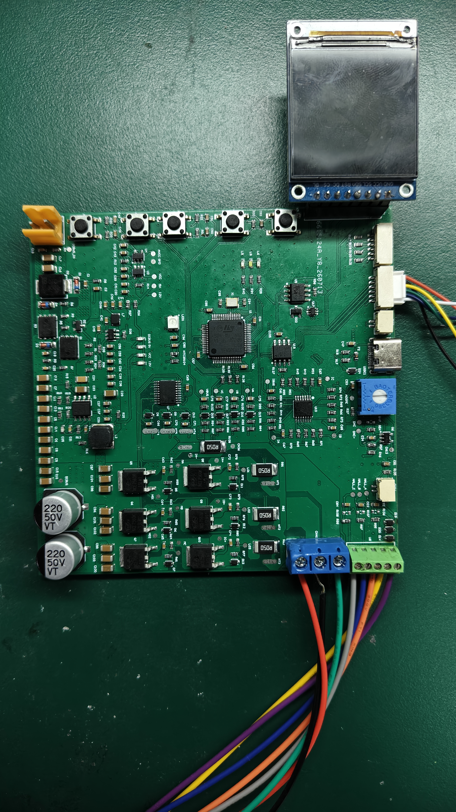

范祎来
教育背景
安徽大学（211）
2024.09 - 2027.06沈阳航空航天大学
2020.09 - 2024.07项目经历

项目1 · 45V-24V有感/无感方波无刷电机驱动板
独立完成最大电流 2A、最大功率 90W 的宽压无刷直流电机驱动板开发，覆盖元器件选型、双层 PCB Layout、手工焊接打样与软硬件联调，最终实现有感/无感方波控制。
查看详情 →
项目2 · 72V-12V FOC有感/无感无刷电机驱动板
在项目1基础上完成硬件架构升级，独立开发最大电流 1A、最大功率 72W 的宽压 FOC 电机驱动板，重点完善三相采样、电源树、STM32G4 主控与外设扩展，并实现 FOC 有感/无感控制。
查看详情 →
项目3 · 智能车主板 · 四层 PCB 设计
基于 AD20 的四层板设计，含光耦隔离驱动、电源管理，独立完成焊接与底层硬件验证。
查看详情 →工作经验
辽宁省鑫源温控技术有限公司
- 硬件设计与产品化：参与基于 KX907 芯片的温度显示器硬件设计，理解从原理图分析、元器件选型到产品生成的完整硬件工程流程。
- 仪器操作与硬件调试：掌握数字示波器、万用表等硬件调试仪器，能够独立完成电路节点的信号测量、波形抓取与异常分析。
- 焊接与动手能力：熟练使用恒温电烙铁、热风枪等生产工具，具备各类贴片及直插电子元器件的焊接、拆焊能力。
- 团队统筹与量产把控：作为组长负责测试良率把控，良率提升至 87%，顺利完成该型号温度显示器的批量生产任务。
技能特长
硬件测试与制备
掌握示波器、万用表及电烙铁等基本硬件设备使用，具备独立进行信号抓取、故障排查与精密焊接的能力，具有 AD20 四层板布局布线经验
嵌入式与底层驱动
掌握 C 语言与 STM32 库函数编程开发，熟悉常见硬件外设通信协议
数据分析
掌握 Python、C++ 与 MATLAB，能够编写硬件测试脚本与处理工程数据
AI 应用
拥有主流大模型部署与应用开发经验，合理运用 AI 工具进行原理图审查、PCB 布局优化建议、调试代码生成及问题排查
荣誉证书
英语六级
听说读写能力良好，能用英语进行日常交流，能快速浏览英文芯片手册等
工信部 Office 专业知识测评证书
2022.03 · 工业和信息化人才交流中心
辽宁省大学生电子设计竞赛 · 三等奖
2022.12 · 有源二分频音频放大电路设计
校大学生电子设计竞赛 · 二等奖
2022 · TI 杯省赛选拔赛
专利与论文
发明专利
基于空间信息的芯片阵列场强分布预测方法及系统
专利号：202610124200.0
发明人：冯乃星（通讯） 范祎来
授权日期：2026-05-12
核心创新：提出 E-300Net 深度学习编解码器，支持多通道像素级特征融合及非对称下采样，实现高分辨率空间细节精确还原。
工程价值：采用 AI 模型替代传统 COMSOL 数值仿真，仿真耗时缩减 94.4%（至 66.7ms），内存占用降低 94.9%，彻底打破算力瓶颈，为高端芯片设计提供高效实时预测与大规模参数寻优方案。
论文
提出基于卷积编解码器的电场强度求解器，通过几何特征投影和空间特征保留机制实现端到端直接映射，替代传统数值仿真。实验表明：平均绝对误差极低，单次仿真时间从12秒降至66.7ms（降低94.4%），峰值内存降低94.9%，突破算力瓶颈，为3D异构芯片大规模参数化扫描提供AI加速方案。
作者：Yilai Fan, Zhixiang Huang, and Naixing Feng*
期刊：ICCEM2026
发布时间：2026-04-09
性格特征及自我评价
专业素养
具备扎实的电子科学与技术专业功底，专注于将理论分析与实际工程落地高效结合。在过往的科研与实践中，培养了极强的数据分析与系统排错能力。性格严谨务实，对待硬件参数与底层逻辑有极高要求，能够从源头把控项目质量。同时具备出色的系统性规划能力与敏锐的成本意识，能够高效拆解并攻克复杂的技术挑战，在保证性能的前提下实现资源的最优配置。
AI 与技术能力
熟练使用并可本地部署市场主流 AI 大模型，善于运用 AI 技术解决复杂工程问题、大幅提升研发与排障效率。熟练掌握 LangChain 等开发框架，具备独立搭建 AI 智能体（Agent）的实战能力，拥有 OpenClaw 等开源应用部署经验，能务实地将前沿 AI 能力转化为具体的工程生产力。
个人特长
在专业领域之外，最大的特长和爱好是视频剪辑。剪辑不单是一项视觉处理技术，更像是一项将海量、碎片化的原始素材进行"结构化重组"的系统工程。因为对这项特长的持续钻研，曾担任学校网络思政中心后期剪辑部部长。任期内，不仅负责底层素材的剪辑与品控，更主导统筹了校级毕业典礼等重磅视听项目的全流程后期配合。这段经历极大锻炼了在高压节点下的全局规划能力、跨部门沟通技巧以及团队协作精神。